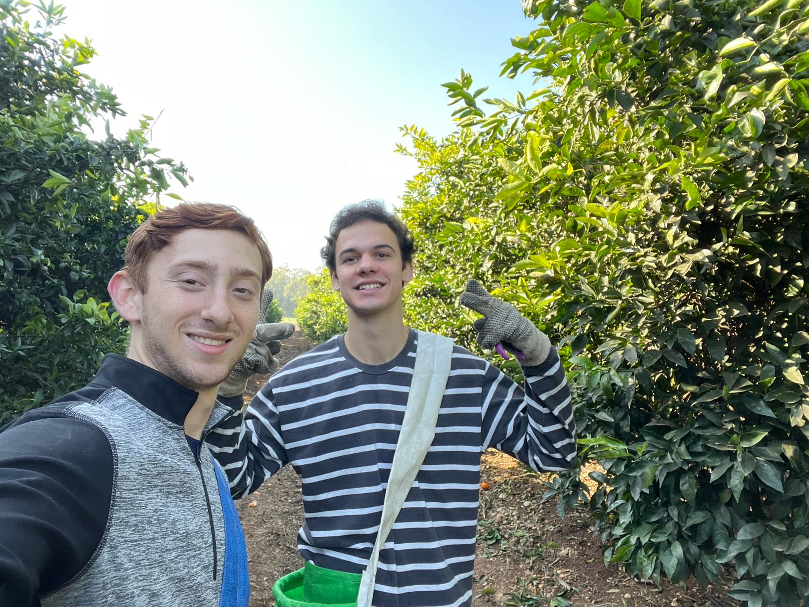
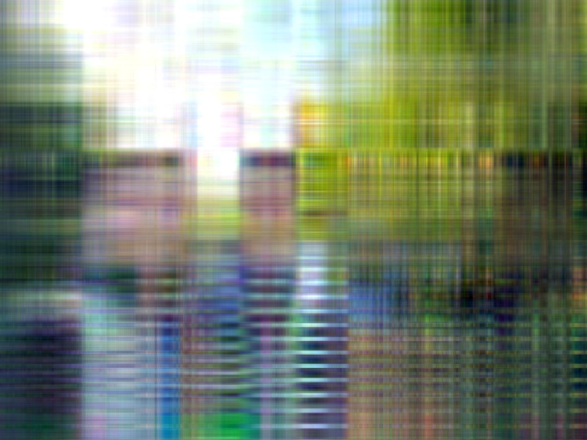

Technion 095296 · Complementary linear algebra · the SVD, algorithms & applications · linear systems & least squares
From the repo README, the material is: complementary linear algebra, the Singular Value Decomposition (algorithms and applications), and linear systems & the least-squares problem (algorithms and applications). The homework brings these to life on real data — image compression, dimensionality reduction for classification, and orthogonalization.
Truncating the SVD of each RGB channel to rank k (HW04 · Q4.py) — with real before/after photos shipped in the repo.
Projecting 1024-D grayscale images onto the top s singular vectors, then nearest-neighbor classification (HW04 · Q5.py).
From-scratch QR factorization and orthogonal projection onto a subspace (HW03 · HW03_Q8_sol.py).
For each color channel A, the code computes the SVD and keeps only the top k singular values: Aₖ = Uₖ Σₖ Vₖᵀ. These images are the actual outputs saved by the repo's Q4.py at each k. Drag the slider to watch detail return as more singular values are kept.


def rank_k_approximation(A, k): U, S, Vt = np.linalg.svd(A, full_matrices=False) U_k = U[:, :k] # top-k left singular vectors S_k = np.diag(S[:k]) # top-k singular values Vt_k = Vt[:k, :] # top-k right singular vectors A_k = np.dot(U_k, np.dot(S_k, Vt_k)) return A_k, relative_error(S, k) def relative_error(S, k): return (S[k])**2 / S[0]**2 # (σ_k / σ_0)²
This runs the repo's Grand_Shit routine live in 2D. Drag the two basis vectors a₁ and a₂ to change the matrix A = [a₁ a₂]. Classical Gram–Schmidt builds an orthonormal Q exactly as the code does: z₀=a₁, then subtracts projections (cal_proj) and normalizes. Drag the white point x to watch Q·Qᵀ·x (projection onto span A) and (I−Q·Qᵀ)·x (the complement) recompute.
A live, 2D version of the repo's KNN routine. Class points are placed for you; click empty space to add a query (or drag the white query point). The classifier uses the exact distance trick from the code — distances = train_norms − 2·(trainᵀ·query) — then takes the k nearest and a np.bincount(...).argmax() majority vote. Background shows the decision regions.
Edit the entries of A, then watch its singular values and the rank-k reconstruction Aₖ = UₖΣₖVₖᵀ computed live (SVD via Jacobi rotations on AᵀA — no libraries). The relative error reported is the repo's exact formula relative_error(S,k) = (σₖ/σ₀)² from rank_k_approximation.
CIFAR-10 images are converted to grayscale (1024 pixels each), mean-centered, and decomposed with the SVD. Keeping the top s left singular vectors Uₛ gives a cheap "PCA" vectorization Uₛᵀ·X; KNN then classifies in that low-dimensional space.
Each 32×32×3 image → 1024-vector via PIL convert('L').
Subtract the per-row mean, then svd(...) → top-s components Uₛ.
cheap = Uₛᵀ · X compresses 1024-D down to s-D.
Distances via ‖t‖² − 2·tᵀx; majority vote over k nearest.
The script sweeps these values and prints train/test error for each:
| parameter | values swept (from the code) |
|---|---|
| s — # singular vectors | 5, 10, 50, 100, 500, 1000 |
| k — # neighbors | 5, 10, 50, 100, 200 |
def svd_decompose(images, s): images = images - np.mean(images, axis=1)[:, np.newaxis] # center U, _, _ = svd(images, full_matrices=False) return U[:, :s] # first s principal components # distance trick used inside KNN (norms − 2·inner products): distances = train_norms - 2*inner_products[:, i] nearest = np.argsort(distances)[:k] prediction = np.bincount(train_labels[nearest]).argmax()
A from-scratch QR: classical Gram–Schmidt orthogonalizes the columns of A into an orthonormal Q, and R is recovered from the inner products. The exercise then uses Q to project a vector onto the subspace spanned by A's columns (Q·Qᵀ·x) and onto its complement ((I − Q·Qᵀ)·x).
def QR_division(A): z, Q = Grand_Shit(A) # Gram–Schmidt → orthonormal Q R = find_R(A, Q, z) return Q, R # Gram–Schmidt core: z[0] = A[0] for i in range(1, len(A)): series_sum = sum(cal_proj(z[j], A[i]) for j in range(i)) z[i] = A[i] - series_sum # subtract projections onto previous W = np.array([normalize(row) for row in z]) # normalize → Q # applications computed on a 15×10 integer matrix M and vector x: print("part 2:", Q @ Q.T @ x) # projection onto span(A) print("part 3", (np.eye(n) - Q @ Q.T) @ x) # projection onto complement
A worked 4×3 example matrix [[1,−1,4],[1,4,−2],[1,4,2],[1,−1,0]] from a previous homework is also factorized to check Q and R against the analytical solution.